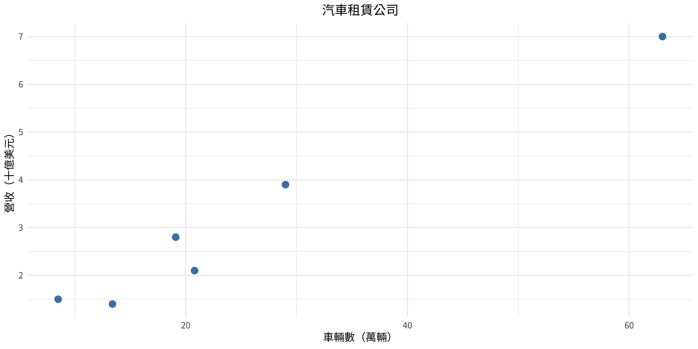
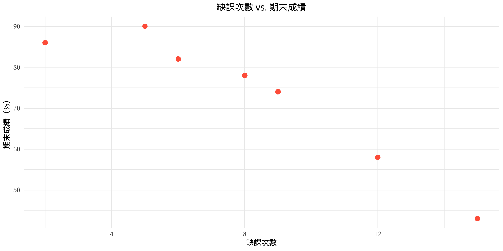
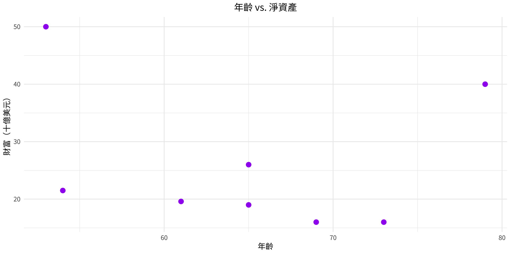
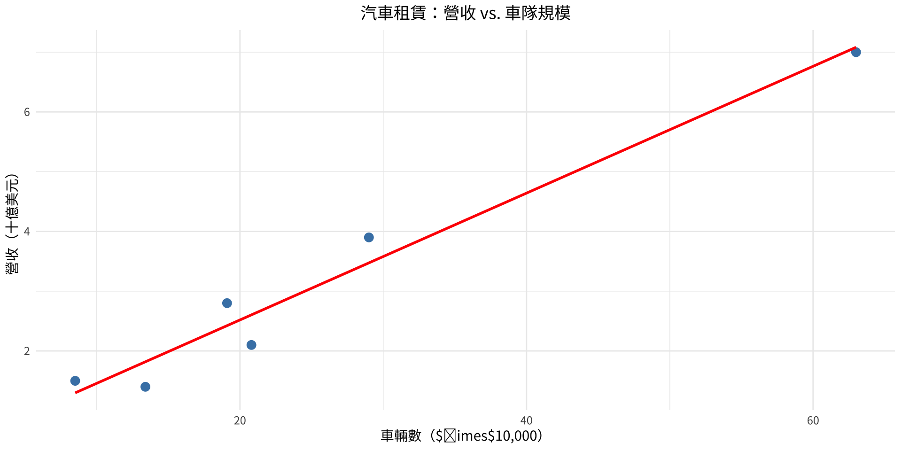
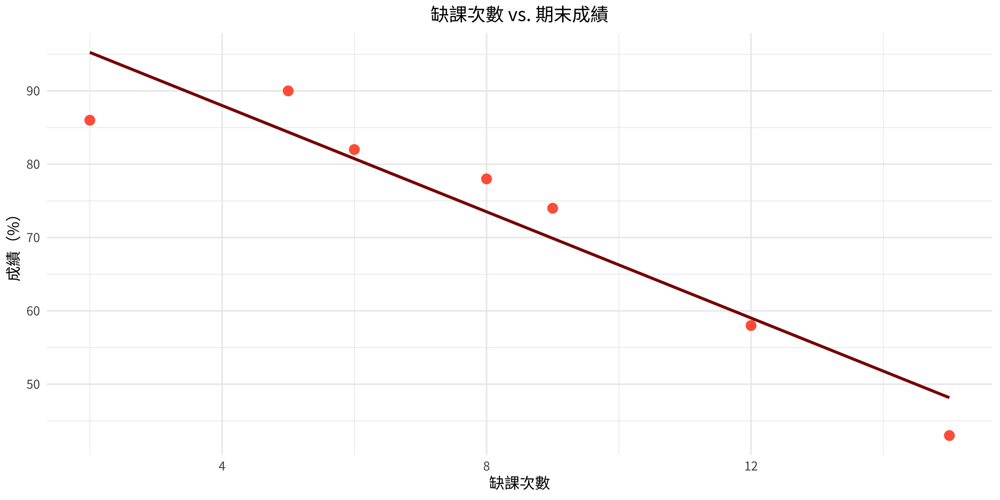
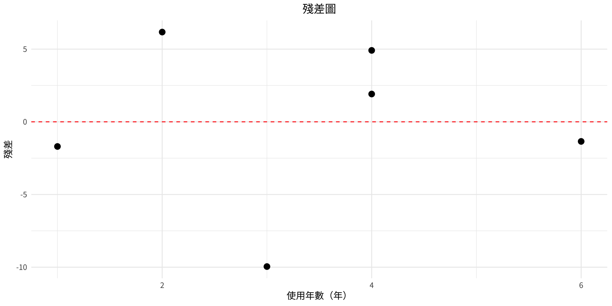

統計學
第十章：相關與迴歸
實踐大學
2026-06-04
第十章概覽
研究者常問：兩個變數之間是否存在關係？若有，關係強度如何？
本章探討四個核心問題：
- 兩個變數之間是否具有線性關係？
- 若有，該關係的強度為何？
- 關係的性質為何（正向、負向、線性、曲線型）？
- 可以根據此關係進行哪些預測？
工具： 散布圖、相關係數、迴歸直線與預測區間。
第 10-1 節：散布圖與相關
關鍵術語
Note
- 自變數（x）： 預測變數——可被控制或操縱。
- 依變數（y）： 反應變數——其值取決於 x。
- 散布圖： 以有序對 (x, y) 繪製的圖形，用於直觀評估兩變數間的關係。
- 正向關係： 兩個變數朝相同方向變動。
- 負向關係： 兩個變數朝相反方向變動。
範例 10-1：汽車租賃公司——散布圖
問題
請為下列汽車租賃公司資料繪製散布圖：
| 公司 | 車輛數（$$10,000） | 營收（十億美元） |
|---|---|---|
| A | 63.0 | 7.0 |
| B | 29.0 | 3.9 |
| C | 20.8 | 2.1 |
| D | 19.1 | 2.8 |
| E | 13.4 | 1.4 |
| F | 8.5 | 1.5 |
範例 10-1：解題步驟（R）
解題步驟

散布圖顯示正向線性關係——車隊規模越大，營收越高。
範例 10-2：缺課次數與期末成績——散布圖
問題
請為七位統計學學生的缺課次數與期末成績繪製散布圖：
| 學生 | 缺課次數 x | 期末成績 y（%） |
|---|---|---|
| A | 6 | 82 |
| B | 2 | 86 |
| C | 15 | 43 |
| D | 9 | 74 |
| E | 12 | 58 |
| F | 5 | 90 |
| G | 8 | 78 |
範例 10-2：解題步驟（R）
解題步驟

散布圖顯示負向線性關係——缺課次數越多，成績越低。
範例 10-3：年齡與財富——散布圖
問題
一位研究者調查美國最富有人士的年齡與淨資產（十億美元）之間的關係：
| 人物 | 年齡 x | 財富 y（十億美元） |
|---|---|---|
| A | 73 | 16 |
| B | 65 | 26 |
| C | 53 | 50 |
| D | 54 | 21.5 |
| E | 79 | 40 |
| F | 69 | 16 |
| G | 61 | 19.6 |
| H | 65 | 19 |
範例 10-3：解題步驟（R）
解題步驟

圖中看不出明顯規律——顯示年齡與財富之間幾乎沒有線性關係。
皮爾森相關係數
Note
皮爾森積差相關係數（r）衡量兩個變數之間線性關係的強度與方向。
r = \frac{n\sum xy - (\sum x)(\sum y)}{\sqrt{[n\sum x^2 - (\sum x)^2][n\sum y^2 - (\sum y)^2]}}
- 範圍：-1 \leq r \leq +1
- 接近 +1：強正向關係
- 接近 −1：強負向關係
- 接近 0：弱或無線性關係
假設： 隨機樣本；近似線性關係；區間或比率資料；雙變量常態分布。
範例 10-4：汽車租賃公司的相關係數
問題
計算範例 10-1 中汽車租賃資料的相關係數。
範例 10-4：解題步驟（數學）
解題步驟
建立計算表：
| 公司 | x | y | xy | x² | y² |
|---|---|---|---|---|---|
| A | 63.0 | 7.0 | 441.00 | 3969.00 | 49.00 |
| B | 29.0 | 3.9 | 113.10 | 841.00 | 15.21 |
| C | 20.8 | 2.1 | 43.68 | 432.64 | 4.41 |
| D | 19.1 | 2.8 | 53.48 | 364.81 | 7.84 |
| E | 13.4 | 1.4 | 18.76 | 179.56 | 1.96 |
| F | 8.5 | 1.5 | 12.75 | 72.25 | 2.25 |
| Σ | 153.8 | 18.7 | 682.77 | 5859.26 | 80.67 |
r = \frac{6(682.77) - (153.8)(18.7)}{\sqrt{[6(5859.26) - 153.8^2][6(80.67) - 18.7^2]}} \approx \boxed{0.982}
範例 10-4：解題步驟（R）
解題步驟
範例 10-5：缺課次數與期末成績的相關係數
問題
計算範例 10-2 中缺課次數與期末成績的相關係數。
r = -0.9442 強負向關係——缺課越多，成績越低。結果： r \approx -0.944 → 強負向線性關係。
範例 10-6：年齡與財富的相關係數
問題
計算範例 10-3 中年齡與財富的相關係數。
r = -0.1763 極弱負向關係——r 接近 0。結果： r \approx -0.176 → 關係極弱，可能係偶然所致。
檢定 r 的顯著性
Note
為判斷 r 是否反映真實的線性關係（而非僅為抽樣誤差），我們進行假設檢定：
H_0: \rho = 0 \quad H_1: \rho \neq 0
相關係數的 t 檢定： t = r\sqrt{\frac{n-2}{1-r^2}}, \quad d.f. = n-2
亦可直接使用表 I（r 的臨界值）——無需計算 t 值。
範例 10-7：檢定 r = 0.982 的顯著性
問題
在 α = 0.05 的顯著水準下，檢定範例 10-4 中 r = 0.982 是否顯著。
步驟一： H₀: ρ = 0 H₁: ρ \neq 0
步驟二： d.f. = 6 − 2 = 4；CV = ±2.776（查 t 表）
步驟三： t = 0.982\sqrt{\frac{6-2}{1-0.982^2}} = 0.982\sqrt{\frac{4}{0.0356}} \approx 10.4
步驟四： |10.4| > 2.776 → 拒絕 H₀
步驟五： 車隊規模與營收之間存在顯著線性關係。
範例 10-7：解題步驟（R）
解題步驟
r = 0.982 t = 10.3921 P 值 = 0.000484 決策： 拒絕 H0 範例 10-8：使用表 I 檢定顯著性（r = −0.176）
問題
在 α = 0.01 的顯著水準下，使用表 I 檢定範例 10-6 中 r = −0.176 的顯著性。
H₀: ρ = 0 H₁: ρ \neq 0
d.f. = 8 − 2 = 6；查表 I，α = 0.01，d.f. = 6：臨界值 = 0.834
|r| = 0.176 < 0.834 → 不拒絕 H₀
沒有足夠證據可以得出年齡與財富之間存在顯著線性關係的結論。
相關 \neq 因果
Important
兩個變數之間存在顯著相關，並不代表存在因果關係。可能的解釋包括：
- 直接因果關係（x 導致 y）
- 反向因果（y 導致 x）
- 潛在變數——第三個變數同時影響 x 和 y
- 多個變數之間的複雜交互關係
- 巧合——關係僅為偶然所致
顯著的 r 值應謹慎解讀，並考慮其他可能的解釋。
第 10-2 節：迴歸
迴歸直線（最適直線）
Note
當 r 顯著時，可以用迴歸直線描述線性關係：
\hat{y} = a + bx
其中： b = \frac{n\sum xy - (\sum x)(\sum y)}{n\sum x^2 - (\sum x)^2}
a = \frac{(\sum y)(\sum x^2) - (\sum x)(\sum xy)}{n\sum x^2 - (\sum x)^2}
- b = 斜率（x 每增加一個單位，y 的邊際變化量）
- a = y 截距
- a 和 b 四捨五入至小數點後三位
範例 10-9：汽車租賃資料的迴歸直線
問題
求範例 10-4 中汽車租賃資料的迴歸方程式。
已知：n = 6，Σx = 153.8，Σy = 18.7，Σxy = 682.77，Σx² = 5859.26
解：
b = \frac{6(682.77) - (153.8)(18.7)}{6(5859.26) - 153.8^2} = \frac{4096.62 - 2876.06}{35155.56 - 23653.44} = \frac{1220.56}{11502.12} \approx 0.106
a = \frac{(18.7)(5859.26) - (153.8)(682.77)}{6(5859.26) - 153.8^2} \approx 0.396
\boxed{\hat{y} = 0.396 + 0.106x}
範例 10-9：解題步驟（R）
解題步驟
截距 a = 0.396 斜率 b = 0.106 
範例 10-10：缺課次數與成績的迴歸直線
問題
求範例 10-2 中缺課次數與成績的迴歸方程式。
n = 7，Σx = 57，Σy = 511，Σxy = 3745，Σx² = 579
b = \frac{7(3745) - (57)(511)}{7(579) - 57^2} = \frac{26215 - 29127}{4053 - 3249} = \frac{-2912}{804} \approx -3.622
a = \frac{(511)(579) - (57)(3745)}{7(579) - 57^2} = \frac{295869 - 213465}{804} \approx 102.493
\boxed{\hat{y} = 102.493 - 3.622x}
範例 10-10：解題步驟（R）
解題步驟
截距 a = 102.493 斜率 b = -3.622 
範例 10-11：進行預測
問題
使用範例 10-9 的迴歸方程式，預測擁有 200,000 輛汽車的租賃公司的營收。
由於 x 的單位為 10,000 輛：x = 200,000 ÷ 10,000 = 20
\hat{y} = 0.396 + 0.106(20) = 0.396 + 2.120 = \boxed{25.16 \text{ 億美元}}
200,000 輛車的預測營收：$ 2.519 十億Important
注意： 預測應僅限於觀測 x 值的範圍內。超出資料範圍的外推並不可靠。
第 10-3 節：決定係數與估計標準誤
變異的分解
Note
y 的總變異可以分解為：
\underbrace{\sum(y - \bar{y})^2}_{\text{總變異}} = \underbrace{\sum(\hat{y} - \bar{y})^2}_{\text{已解釋變異}} + \underbrace{\sum(y - \hat{y})^2}_{\text{未解釋變異}}
- 已解釋變異： 歸因於與 x 的線性關係
- 未解釋變異： 由機會或其他因素所致（又稱殘差變異）
決定係數
Note
r^2 = \frac{\text{已解釋變異}}{\text{總變異}}
等價地，r^2 可由相關係數平方得到。
- 以百分比表示的 r^2 告訴我們 y 的變異中有多少比例可由 x 解釋。
- 非決定係數： 1 - r^2（未解釋的比例）
範例： 若 r = 0.982，則 r² = 0.964，表示營收變異的 96.4% 可由車隊規模解釋。
決定係數——R 範例
r = 0.982 → r² = 0.9643 (96.4% 已解釋)
r = -0.944 → r² = 0.8911 (89.1% 已解釋)
r = -0.176 → r² = 0.0310 (3.1% 已解釋)
r = 0.900 → r² = 0.8100 (81.0% 已解釋)
r = 0.600 → r² = 0.3600 (36.0% 已解釋)估計標準誤
Note
估計標準誤（s_{est}）衡量觀測 y 值圍繞迴歸直線的離散程度：
s_{est} = \sqrt{\frac{\sum(y - \hat{y})^2}{n-2}}
計算捷徑：
s_{est} = \sqrt{\frac{\sum y^2 - a\sum y - b\sum xy}{n-2}}
s_{est} 越小，迴歸直線的配適效果越好。
範例 10-12：影印機維護費用
問題
一位研究者發現影印機使用年數（年）與每月維護費用（美元）之間存在顯著關係，迴歸方程式為 \hat{y} = 55.57 + 8.13x。請求估計標準誤。
| 機器 | 使用年數 x | 費用 y |
|---|---|---|
| A | 1 | $62 |
| B | 2 | $78 |
| C | 3 | $70 |
| D | 4 | $90 |
| E | 4 | $93 |
| F | 6 | $103 |
範例 10-12：解題步驟（數學）
解題步驟
計算每個觀測值的 \hat{y} 與殘差：
| x | y | \hat{y} | y - \hat{y} | (y - \hat{y})^2 |
|---|---|---|---|---|
| 1 | 62 | 63.70 | −1.70 | 2.89 |
| 2 | 78 | 71.83 | 6.17 | 38.07 |
| 3 | 70 | 79.96 | −9.96 | 99.20 |
| 4 | 90 | 88.09 | 1.91 | 3.65 |
| 4 | 93 | 88.09 | 4.91 | 24.11 |
| 6 | 103 | 104.35 | −1.35 | 1.82 |
| Σ | 169.74 |
s_{est} = \sqrt{\frac{169.74}{6-2}} = \sqrt{42.44} \approx \boxed{6.51}
範例 10-12：解題步驟（R）
解題步驟
截距 a = 55.565 斜率 b = 8.13 估計標準誤 s_est = 6.5142 r² = 0.8566 範例 10-13：使用捷徑公式計算估計標準誤
問題
使用捷徑公式與範例 10-12 的資料（其中 Σy² = 42,186，Σy = 496，Σxy = 1778，a = 55.57，b = 8.13）：
s_{est} = \sqrt{\frac{42186 - 55.57(496) - 8.13(1778)}{6-2}} \approx \boxed{6.48}
s_est（捷徑公式）= 6.5142 （a 和 b 的四捨五入造成微小差異。）
預測區間
Note
預測區間提供了在給定 x 值下，未來個別 y 值預期落入的範圍：
\hat{y} \pm t_{\alpha/2} \cdot s_{est} \sqrt{1 + \frac{1}{n} + \frac{n(x - \bar{X})^2}{n\sum x^2 - (\sum x)^2}}
其中 d.f. = n - 2
範例 10-14：95% 預測區間
問題
以影印機資料為例，求當機器使用年數為 3 年時，每月維護費用的 95% 預測區間。
已知：\sum x = 20，\sum x^2 = 82，\bar{X} = 20/6 = 3.3，\hat{y}(3) = 79.96，s_{est} = 6.48，t_{0.025, 4} = 2.776
\text{SE 因子} = \sqrt{1 + \frac{1}{6} + \frac{6(3-3.3)^2}{6(82)-20^2}} = \sqrt{1 + 0.167 + \frac{0.54}{92}} \approx 1.08
79.96 \pm 2.776(6.48)(1.08) = 79.96 \pm 19.43
\boxed{60.53 < y < 99.39}
範例 10-14：解題步驟（R）
解題步驟
x=3 時的預測 y： 79.96 95% 預測區間：( 60.36 , 99.55 )我們有 95% 的信心認為，3 年機齡機器的實際維護費用介於 $60.53 至 $99.39 之間。
殘差圖
x <- c(1, 2, 3, 4, 4, 6)
y <- c(62, 78, 70, 90, 93, 103)
model3 <- lm(y ~ x)
df_resid <- data.frame(x, residuals = resid(model3))
ggplot(df_resid, aes(x = x, y = residuals)) +
geom_point(size = 3) +
geom_hline(yintercept = 0, linetype = "dashed", color = "red") +
labs(title = "殘差圖", x = "使用年數（年）", y = "殘差")
若殘差隨機散布在 0 附近，表示線性模型是合適的。
第 10-4 節：多元迴歸（選讀）
多元迴歸概覽
Note
多元迴歸使用兩個或更多自變數來預測單一依變數：
\hat{y} = a + b_1 x_1 + b_2 x_2 + \cdots + b_k x_k
- 每個 b_i 是偏迴歸係數：在其他 x 保持不變的情況下，x_i 每增加一個單位，y 的變化量。
假設： 1. 每個 x 值對應的 y 值服從常態分布 2. 等變異數性（同質變異數） 3. 線性關係 4. 非多重共線性（自變數之間相關性不高） 5. 觀測值之間相互獨立
範例 10-13：州立考試成績——多元迴歸
問題
一位護理學教師希望從 GPA（x₁）和年齡（x₂）預測學生的州立考試成績（y）。5 位學生的資料如下：
| 學生 | GPA x₁ | 年齡 x₂ | 成績 y |
|---|---|---|---|
| A | 3.2 | 22 | 550 |
| B | 2.7 | 27 | 570 |
| C | 2.5 | 24 | 525 |
| D | 3.4 | 28 | 670 |
| E | 2.2 | 23 | 490 |
求多元迴歸方程式。
範例 10-13：解題步驟（R）
解題步驟
Call:
lm(formula = score ~ gpa + age)
Residuals:
1 2 3 4 5
-5.364 -14.209 1.918 9.910 7.743
Coefficients:
Estimate Std. Error t value Pr(>|t|)
(Intercept) -44.810 69.247 -0.647 0.5839
gpa 87.640 15.237 5.752 0.0289 *
age 14.533 2.914 4.988 0.0379 *
---
Signif. codes: 0 '***' 0.001 '**' 0.01 '*' 0.05 '.' 0.1 ' ' 1
Residual standard error: 14.01 on 2 degrees of freedom
Multiple R-squared: 0.9787, Adjusted R-squared: 0.9574
F-statistic: 45.93 on 2 and 2 DF, p-value: 0.02131\boxed{\hat{y} = -44.81 + 87.64 \cdot \text{GPA} + 14.533 \cdot \text{年齡}}
對於 GPA = 3.0、年齡 = 25 的學生：\hat{y} = -44.81 + 87.64(3.0) + 14.533(25) \approx \mathbf{581}
使用多元迴歸方程式進行預測
預測州立考試成績： 581.4 係數解讀： - 在年齡不變的情況下，GPA 每增加 1 點，成績約增加 87.64 分 - 在 GPA 不變的情況下，年齡每增加 1 歲，成績約增加 14.53 分
多元相關係數 R
Note
多元相關係數 R 衡量所有預測變數與依變數之間關係的強度：
R = \sqrt{\frac{r_{yx_1}^2 + r_{yx_2}^2 - 2r_{yx_1}r_{yx_2}r_{x_1x_2}}{1 - r_{x_1x_2}^2}}
- 範圍：0 至 1（永不為負）
- R^2 = 多元決定係數（所解釋的變異比例）
- 1 - R^2 = 殘差/誤差變異
範例 10-15：多元相關係數
問題
對於州立考試成績資料，已知 r_{yx_1} = 0.845，r_{yx_2} = 0.791，r_{x_1x_2} = 0.371，求 R。
R = \sqrt{\frac{0.845^2 + 0.791^2 - 2(0.845)(0.791)(0.371)}{1 - 0.371^2}} = \sqrt{\frac{0.8428}{0.8623}} \approx \boxed{0.989}
R 顯著性的 F 檢定
Note
使用以下公式檢定 H_0: \rho = 0 對 H_1: \rho \neq 0：
F = \frac{R^2/k}{(1-R^2)/(n-k-1)}
- 分子自由度 = k 分母自由度 = n − k − 1
其中 k = 自變數個數，n = 資料組數。
範例 10-16：多元相關的 F 檢定
問題
在 α = 0.05 的顯著水準下，檢定州立考試成績資料（n = 5，k = 2）中 R = 0.989 的顯著性。
F = \frac{0.989^2/2}{(1-0.989^2)/(5-2-1)} = \frac{0.978/2}{0.022/2} = \frac{0.489}{0.011} \approx 44.45
臨界值（查表 H，分子自由度 = 2，分母自由度 = 2，α = 0.05）：19.16
44.45 > 19.16 → 拒絕 H₀ — 存在顯著關係。
範例 10-17：調整後的 R²
Note
調整後的 R² 修正了預測變數個數與樣本數的影響：
R^2_{adj} = 1 - \frac{(1-R^2)(n-1)}{n-k-1}
調整後的 R² 永遠 \leq R^2，並對加入不必要的預測變數給予懲罰。
問題
計算 R = 0.989，n = 5，k = 2 的調整後 R²。
R^2_{adj} = 1 - \frac{(1-0.989^2)(5-1)}{5-2-1} = 1 - \frac{(0.022)(4)}{2} = 1 - 0.044 = \boxed{0.956}
第十章摘要
| 概念 | 公式 | 用途 |
|---|---|---|
| 相關係數 | r = \frac{n\sum xy - \sum x \sum y}{\sqrt{[n\sum x^2 - (\sum x)^2][n\sum y^2 - (\sum y)^2]}} | 線性關係的強度與方向 |
| r 的 t 檢定 | t = r\sqrt{\frac{n-2}{1-r^2}}，自由度 = n−2 | 檢定 r 是否顯著 |
| 迴歸直線 | \hat{y} = a + bx | 由 x 預測 y |
| 決定係數 | r^2 | y 的變異中可由 x 解釋的百分比 |
| 概念 | 公式 | 用途 |
|---|---|---|
| 估計標準誤 | s_{est} = \sqrt{\frac{\sum(y-\hat{y})^2}{n-2}} | 預測的準確度 |
| 預測區間 | \hat{y} \pm t_{\alpha/2} \cdot s_{est} \cdot \text{SE 因子} | 個別 y 的預測範圍 |
| 多元 R | R = \sqrt{\frac{r_{yx_1}^2 + r_{yx_2}^2 - 2r_{yx_1}r_{yx_2}r_{x_1x_2}}{1-r_{x_1x_2}^2}} | 多個預測變數 |
版權聲明
版權說明。 本教材改編自 Bluman, A. G. (2011). Elementary statistics: A step by step approach (8th ed.). McGraw-Hill。所有權利均由原始作者及出版商保留。
僅限非商業用途。 本教材嚴格用於教育目的，不得用於商業獲利。
適當引用。 任何複製、散布或使用本教材的行為，均須適當引用原始資料來源。

Elementary Statistics: A Step by Step Approach